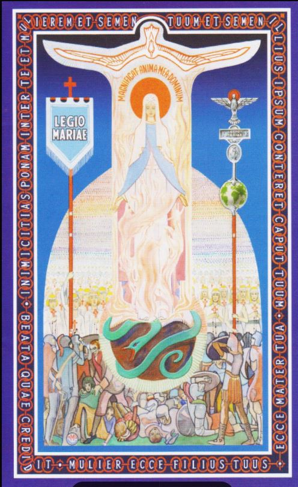

Legion of Mary Tessera
Tessera

Inimicitias ponam inter te et mulierem et semen tuum et semen illius ipsum conteret caput tuum. (Gen 3:15)
Ecce Mater tua • Mulier ecce filius tuus. (Jn 19:26-27)
Magnificat anima mea Dominum. (Lk 1:46)
Beata quae credidit. (Lk 1:45)
The Legion of Mary Tessera image is a powerful symbolic representation of the organization's devotional outlook and spiritual warfare. The border inscription on the Tessera contains several significant Latin phrases:
"Inimicitias ponam inter te et mulierem et semen tuum et semen illius; ipsum conteret caput tuum" - This translates to "I will put enmity between you and the woman, and between your offspring and hers; he will strike your head." (Genesis 3:15). This refers to God's promise of redemption and the eternal conflict between good and evil.
"Mulier, ecce filius tuus: . . . Ecce mater tua" - Meaning "Woman, here is your son . . . Here is your mother." (John 19:26-27). This represents Mary's spiritual motherhood of all believers.
"Beata quae credidit" - Translating to "Blessed is she who believed" (Luke 1:45). This emphasizes Mary's faith and her role in salvation history.
The border also features a chain design, symbolizing the Catena (Latin for "chain"), representing the unity of all Legionaries in daily prayer. The inscription and imagery together convey the Legion's devotion to Mary, its spiritual warfare against evil, and the unity of its members in faith and prayer.
Opening Prayers
In the name of the Father, etc.
Come, O Holy Spirit, fill the hearts of your faithful, and enkindle in them the fire of your love.
V. Send forth your Spirit, O Lord, and they shall be created.
R. And you shall renew the face of the earth.
Let us pray
God our Father, pour out the gifts of your Holy Spirit on the world. You sent the Spirit on your Church to begin the teaching of the gospel: now let the Spirit continue to work in the world through the hearts of all who believe.
Through Christ our Lord. Amen.
V. You, O Lord, will open my lips.
R. And my tongue shall announce your praise.
V. Incline unto my aid, O God.
R. O Lord, make haste to help me.
V. Glory be to the Father, etc.
R. As it was in the beginning, etc.
The Rosary
Then follow five decades of the Rosary with the Hail, Holy Queen.
Hail, Holy Queen
Hail, holy Queen, Mother of Mercy; hail, our life, our sweetness and our hope. To you we cry poor banished children of Eve, to you we send up our sighs, mourning and weeping in this valley of tears. Turn then, O most gracious advocate, your eyes of mercy towards us and after this, our exile, show us the blessed fruit of your womb, Jesus. O clement, O loving, O sweet Virgin Mary.
V. Pray for us, O holy Mother of God.
R. That we may be made worthy of the promises of Christ.
Let us pray
O God, whose only-begotten Son, by his life, death and resurrection, has purchased for us the rewards of eternal salvation; grant, we beseech you, that meditating upon these mysteries in the most holy Rosary of the Blessed Virgin Mary, we may imitate what they contain, and obtain what they promise. Through the same Christ our Lord. Amen.
V. Most Sacred Heart of Jesus
R. Have mercy on us.
V. Immaculate Heart of Mary
R. Pray for us.
V. St. Joseph
R. Pray for us.
V. St. John the Evangelist
R. Pray for us.
V. St. Louis-Marie de Montfort
R. Pray for us.
In the name of the Father, etc.
The Catena Legionis
Antiphon. Who is she that comes forth as the morning rising, fair as the moon, bright as the sun, terrible as an army set in battle array?
Magnificat (The Canticle of Mary) - Luke 1:46-55
My soul glorifies the Lord,*
my spirit rejoices in God, my Saviour.
He looks on his servant in her lowliness;*
henceforth all ages will call me blessed.
The Almighty works marvels for me.*
Holy his name!
His mercy is from age to age,*
on those who fear him.
He puts forth his arm in strength*
and scatters the proud-hearted.
He casts the mighty from their thrones*
and raises the lowly.
He fills the starving with good things,*
sends the rich away empty.
He protects Israel, his servant,*
remembering his mercy,
the mercy promised to our fathers,*
to Abraham and his sons for ever.
Glory be to the Father, and to the Son, and to the Holy Spirit.
As it was in the beginning, is now, and ever shall be, world without end, Amen.
Antiphon. Who is she that comes forth as the morning rising, fair as the moon, bright as the sun, terrible as an army set in battle array?
V. O Mary, conceived without sin.
R. Pray for us who have recourse to you.
Let us pray
O Lord Jesus Christ, our mediator with the Father, you have been pleased to appoint the most Blessed Virgin, your mother, to be our mother also, and our mediatrix with you, mercifully grant that whoever comes to you seeking your favours may rejoice to receive all of them through her. Amen.
Concluding Prayers
In the name of the Father, etc.
We fly to your patronage, O Holy Mother of God; despise not our prayers in our necessities, but ever deliver us from all dangers, O glorious and blessed Virgin.
V. Mary Immaculate, Mediatrix of all Graces
(or Invocation appropriate to Praesidium)
R. Pray for us.
V. Saints Michael, Gabriel and Raphael
R. Pray for us.
V. All you heavenly Powers, Mary's Legion of Angels
R. Pray for us.
V. St. John the Baptist
R. Pray for us.
V. Saints Peter and Paul
R. Pray for us.
Let us pray
Confer, O Lord, on us, who serve beneath the standard of Mary, that fullness of faith in you and trust in her, to which it is given to conquer the world. Grant us a lively faith, animated by charity, which will enable us to perform all our actions from the motive of pure love of you, and ever to see you and serve you in our neighbour; a faith, firm and immovable as a rock, through which we shall rest tranquil and steadfast amid the crosses, toils and disappointments of life; a courageous faith which will inspire us to undertake and carry out without hesitation great things for your glory and for the salvation of souls; a faith which will be our Legion's Pillar of Fire - to lead us forth united
— to kindle everywhere the fires of divine love
— to enlighten those who are in darkness and in the shadow of death
— to inflame those who are lukewarm
— to bring back life to those who are dead in sin;
and which will guide our own feet in the way of peace; so that — the battle of life over — our Legion may reassemble, without the loss of any one, in the kingdom of your love and glory. Amen.
May the souls of our departed legionaries and the souls of all the faithful departed through the mercy of God rest in peace. Amen.
In the name of the Father, etc.
(Permissu Ordinarii Dioec. Dublinen, die 9a Mar., 1994)
Translation of The Magnificat from the Hebrew published by The Grail by kind permission of A.P. Watt Ltd. on behalf of The Grail, England.
MAHONS, DUBLIN
Prayer for the Beatification of the Servant of God
Frank Duff
God our Father,
You inspired your servant Frank Duff with a profound insight into the mystery of your Church, the Body of Christ, and of the place of Mary the Mother of Jesus in this mystery.
In his immense desire to share this insight with others and in filial dependance on Mary, he formed her Legion to be a sign of her maternal love for the world and a means of enlisting all her children in the Church's evangelising work.
We thank you Father for the graces conferred on him and for the benefits accruing to the Church from his courageous and shining faith.
With confidence we beg you that through his intercession, you grant the petition we lay before you ..........
We ask too that if it be in accordance with your will, the holiness of his life may be acknowledged by the Church for the glory of your Name.
Through Christ Our Lord, Amen